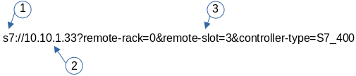

S7-Light (Step7)

When trying to connect to a Siemens LOGO device, it is important to add one connection option, as Siemens seems to have only partially implemented the protocol, the device simply terminates the connection as soon as our driver tried to read the SZL table in order to find out which type of S7 device it is talking to. This can be disabled by passing in the type of PLC. For a Siemens LOGO device therefore please add ?controller-type=LOGO to the connection string.
|
The S7-Light driver is a stripped-down version of the full S7 driver. It’s main goal is to simplify communication for S7 devices, that do not support subscriptions, as under heavy load, these have proven to cause issues. As soon as we have rewritten the PLC4X SPI, we will most probably merge both back together again.
Connecting as easy as 1-2-3.
ONE
In PLC4X the URL philosophy is used as the data source for the connection for the specification of the driver and its connection parameters, this is almost a standard in network applications (pointing to the best practices). It is also possible to create an instance of the driver directly and assign its parameters with the typical "set" methods.

|
In the following, reference will be made to the Java-based driver, which implements all the functionalities indicated in this manual. |
The specified URL has the structure

-
SCHEMA: Defines the protocol to be used, in our particular case S7
-
DOMAINE NAME: Physical address of the PLC or CP’s.
-
PARAMETERS: List of key/value values separated by ampersand "&". They define the behavior of the driver.
The SCHEMA and DOMAINE NAME are almost standard for any URL and do not require further explanation. The PARAMETERS that define the behavior of the driver are defined in the following table.
Connection String Options
Name |
Type |
Default Value |
Required |
Description |
Name |
Siemens S7 (Basic) (light) |
|||
Code |
|
|||
Maven Dependency |
<dependency> <groupId>org.apache.plc4x</groupId> <artifactId>plc4j-driver-s7</artifactId> <version>pre-release</version> </dependency> |
|||
Default Transport |
|
|||
Supported Transports |
|
|||
Config options: |
||||
|
INT |
1 |
Rack value for the client (PLC4X device). |
|
|
INT |
1 |
Slot value for the client (PLC4X device). |
|
|
STRING |
OTHERS |
Local Device Group. (Defaults to 'OTHERS'). |
|
|
INT |
0 |
Local Transport Service Access Point. (Overrides settings made in local-rack, local-slot and local-device-group. Be sure to convert into integer representation) |
|
|
INT |
0 |
Rack value for the remote main CPU (PLC). |
|
|
INT |
0 |
Slot value for the remote main CPU (PLC). |
|
|
STRING |
PG_OR_PC |
Remote Device Group (Defaults to 'PG_OR_PC'). |
|
|
INT |
0 |
Remote Transport Service Access Point. (Overrides settings made in remote-rack, remote-slot and remote-device-group. Be sure to convert into integer representation) |
|
|
INT |
1024 |
Maximum size of a data-packet sent to and received from the remote PLC. During the connection process both parties will negotiate a maximum size both parties can work with and is equal or smaller than the given value is used. The driver will automatically split up large requests to not exceed this value in a request or expected response. |
|
|
INT |
8 |
Maximum number of unconfirmed requests the PLC will accept in parallel before discarding with errors. This parameter also will be negotiated during the connection process and the maximum both parties can work with and is equal or smaller than the given value is used. The driver will automatically take care not exceeding this value while processing requests. Too many requests can cause a growing queue. |
|
|
INT |
8 |
Maximum number of unconfirmed responses or requests PLC4X will accept in parallel before discarding with errors. This option is available for completeness and is correctly handled out during the connection process, however it is currently not enforced on PLC4X’s side. So if a PLC would send more messages than agreed upon, these would still be processed. |
|
|
STRING |
As part of the connection process, usually the PLC4X S7 driver would try to identify the remote device. However some devices seem to have problems with this and hang up or cause other problems. In such a case, providing the controller-type will skip the identification process and hereby avoid this type of problem. Possible values are:/n- S7_300 |
||
|
INT |
1000 |
This is the maximum waiting time for reading on the TCP channel. As there is no traffic, it must be assumed that the connection with the interlocutor was lost and it must be restarted. When the channel is closed, the "fail over" is carried out in case of having the secondary channel, or it is expected that it will be restored automatically, which is done every 4 seconds. |
|
|
BOOLEAN |
true |
Enable the new experimental block-read optimizer, that groups tags in close memory proximity together and reads blocks of data instead of individual tags. This allows more data to be transferred in one request and is generally intended for cases in which a big number of tags are read. |
|
Transport config options: |
||||
tcp |
||||
|
BOOLEAN |
false |
Should keep-alive packets be sent? |
|
|
BOOLEAN |
true |
Should packets be sent instantly or should we give the OS some time to aggregate data. |
|
|
INT |
1000 |
Timeout after which a connection will be treated as disconnected. |
|
| Name | Value | Description |
|---|---|---|
Supported Operations |
||
|
Only supported with |
|
|
Only supported with |
|
TWO
After defining the URL, the connection is made. Driver selection from the URL is done via PLC4X’s SPI support, so driver instantiation and mapping originating from the URL is done transparently by the Java SPI services.
Any inconsistency in the URL definition will generate an exception that must be handled by the user program.
.
.
.
try {
PlcConnection connection new DefaultPlcDriverManager().getConnection("s7://10.10.1.33?remote-rack=0&remote-slot=3&controller-type=S7_400"); //(2.1)
final PlcReadRequest.Builder subscription connection.readRequestBuilder(); //(2.2)
.
.
.
}In (2.1) the driver instance is created, you only have to ensure that the required driver is in the CLASSPATH of your Java environment. Already in (2.2) it defines the type of service required (read/write or a subscription), here a read request is indicated.
No problems? Then we are ready to configure and request the data that we require from the PLC. Let’s go to step "three".
THREE
By having the connection we can start building and executing our requests.
.
.
.
readrequest.addTagAddress("MySZL", "SZL_ID=16#0091;INDEX=16#0000"); //(3.1)
final PlcReadRequest rr readrequest.build(); //(3.2)
final PlcReadResponse szlresponse rr.execute().get(); //(3.3)
if (szlresponse.getResponseCode("MySZL") = PlcResponseCode.OK) {//(3.4)
}
.
.
.In (3.1) the request for a PLCTag is constructed, in this particular case a list of controller system status. In step (3.2) we build the request and in (3.3) we execute the request using the futures pattern in Java. We verify in (3.4) that everything is fine and that our data was acquired.
These steps are shown separately for ease of analysis, but can be simplified into one statement to avoid excessive code.
A detailed explanation of the format for addressing PLCTags in the S7 driver will be given in the following sections.
Individual Resource Address Format
When programming Siemens PLCs, usually the tool used to do that is called TIA Portal.
The PLC4X S7 Driver is therefore sticking to the address format defined by this tool as it simplifies exchanging address information.
General Format
In general all S7 addresses have this format:
. %{Memory-Area}{start-address}:{Data-Type}[{array-size}]
If the array-part is omitted, the size-default of 1 is assumed.
Generally there are two types of addresses:
. Bit-Addresses {Memory-Area-Code}{Start-Byte-Address}.{Bit-Offset}:BOOL[{Count}]
. Byte-Addresses {Memory-Area-Code}{Start-Byte-Address}:{Data-Type-Code}[{count}]
Bit addresses are only used if the datatype: BOOL is used.
The array notation of these can be omitted. In this case a Count of 1 is used per default.
Start-Byte-Address and Bit-Offset in above list both represent unsigned integer values.
In case of accessing data in the data block memory area, the syntax is quite a bit more complex:
. DB{Data-Block-Number}.DB{Short-Data-Type-Code}{Start-Byte-Address}.{Bit-Offset}:BOOL[{Count}]
. DB{Data-Block-Number}.DB{Short-Data-Type-Code}{Start-Byte-Address}:{Data-Type-Code}[{Count}]
When reading a STRING datatype, currently 254 characters would automatically be fetched from the PLC.
In order to limit the amount of data, we extended the STRING type declaration syntax to allow limiting this.
With the following format less than 254 characters can be read:
. DB{Data-Block-Number}.DB{Short-Data-Type-Code}{Start-Byte-Address}:STRING({string-length})[{Count}]
These addresses can usually be copied directly out of TIA portal.
However we also implemented a shorter version, as above version does have some unnecesary boilerplate parts (The .DB in the middle as well as the Short-Data-Type-Code)
The shorter syntax looks like this:
. DB{Data-Block-Number}:{Start-Byte-Address}.{Bit-Offset}:BOOL[{Count}]
. DB{Data-Block-Number}:{Start-Byte-Address}:{Data-Type-Code}[{Count}]
. DB{Data-Block-Number}:{Start-Byte-Address}:STRING({string-length})[{Count}]
The S7 driver will handle both types of notation equally.
Memory Areas
The S7 driver currently allows access to the following memory areas.
The Code column represents the code that is used in above general address syntax:
Not all S7 device types support the same full set of memory areas, so the last column gives more information on which types a given memory area is supported on.
| Code | Name | Description | Supported PLC Types |
|---|---|---|---|
C |
COUNTERS |
TODO: Document this |
TODO: Document this |
T |
TIMERS |
TODO: Document this |
TODO: Document this |
D |
DIRECT_PERIPHERAL_ACCESS |
TODO: Document this |
TODO: Document this |
I |
INPUTS |
Inputs (Digital and Analog … usually Analog Inputs just have a start-address offset to separate them from the digital ones) |
All |
Q |
OUTPUTS |
Outputs (Digital and Analog … usually Analog Outputs just have a start-address offset to separate them from the digital ones) |
All |
M |
FLAGS_MARKERS |
TODO: Document this |
TODO: Document this |
DB |
DATA_BLOCKS |
Memory areas containing user-defined data structures usually accessed by the integer data block number. antease note that data block addresses have a little more complex address format. |
All |
DBI |
INSTANCE_DATA_BLOCKS |
TODO: Document this |
TODO: Document this |
LD |
LOCAL_DATA |
TODO: Document this |
TODO: Document this |
Data Types
| Code | Short-Code | Name | Description | Size in bits | Supported PLC Types |
|---|---|---|---|---|---|
Bit-Strings (Will all interpreted as sequence of boolean values in PLC4X) |
|||||
BOOL |
X |
Bit |
Single boolean value |
1 |
All |
BYTE |
B |
Byte |
Array of 8 boolean values |
1 |
All |
WORD |
W |
Word |
Array of 16 boolean values |
2 |
All |
DWORD |
D |
Double-Word |
Array of 32 boolean values |
4 |
All |
LWORD |
X |
Long-Word |
Array of 64 boolean values |
8 |
S7_1500 |
Integer values |
|||||
SINT |
B |
Small int |
8 bit integer (signed) |
1 |
S7_1200, S7_1500 |
USINT |
B |
Small unsigned int |
8 bit integer (unsigned) |
1 |
S7_1200, S7_1500 |
INT |
W |
Integer |
16 bit integer (signed) |
2 |
All |
UINT |
W |
Unsigned integer |
16 bit integer (unsigned) |
2 |
S7_1200, S7_1500 |
DINT |
D |
Double integer |
32 bit integer (signed) |
4 |
All |
UDINT |
D |
Unsigned Double Integer |
32 bit integer (unsigned) |
4 |
S7_1200, S7_1500 |
LINT |
X |
Long integer |
64 bit integer (signed) |
8 |
S7_1500 |
ULINT |
X |
Unsigned long integer |
64 bit integer (unsigned) |
8 |
S7_1500 |
Floating point values |
|||||
REAL |
D |
Real |
32 bit IEEE 754 full precision floating point value (signed) |
4 |
All |
LREAL |
X |
Long Real |
64 bit IEEE 754 double precision floating point value (signed) |
8 |
S7_1200, S7_1500 |
Character values |
|||||
CHAR |
B |
Character |
8 bit character |
1 |
All |
WCHAR |
X |
Double byte character |
16 bit character value |
2 |
S7_1200, S7_1500 |
STRING |
X |
String |
String 2 + n bytes |
1 |
All |
WSTRING |
X |
Double byte String |
String of 16 bit characters 2 + n bytes |
1 |
S7_1200, S7_1500 |
Temporal values |
|||||
S5TIME |
X |
S5 Time |
S5 Time (like in duration) |
2 |
S7_300, S7_400, S7_1500 |
TIME |
X |
Time |
Time (like in duration) (Minutes, Seconds, Milliseconds) |
4 |
All |
LTIME |
X |
Long Time |
Long Time (like in duration) (Minutes, Seconds, Milliseconds, Microseconds, Nanoseconds) |
8 |
S7_1500 |
DATE |
X |
Date |
Date |
2 |
All |
TIME_OF_DAY |
X |
Time of day |
Time (like in 4:40PM) |
4 |
All |
DATE_AND_TIME |
X |
Date and Time |
Date and time (like in 03.05.2020 4:40 PM) |
8 |
S7_300, S7_400, S7_1500 |
Some useful tips
Especially when it comes to the input- and output addresses for analog channels, the start addresses are configurable and hereby don’t always start at the same address.
In order to find out what addresses these ports have, please go to the device setting of your PLC in TIA Portal

Especially pay attention to this part:

In above image you can see that this device has 8 digital inputs (DI 8) and 2 analog inputs (AI 2_1) as well as 6 digital outputs (DQ 6).
The start addresses of the digital inputs and outputs start directly at 0.
The analog inputs however start at address 64.
Each digital input and output can be addresses by a single bit-address (start-address and offset) or can be read in a block by reading a full byte starting at the given start address without providing a bit offset.